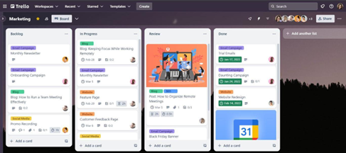

Dirty Hill -- Snelheid zichtbaar maken
Opdrachtgever: Mountainbikeclub Dirty Hill
Mountainbikeclub Dirty Hill is een actieve en gezellige vereniging met meer dan 250 leden, waar recreatief mountainbiken centraal staat. De club organiseert uiteenlopende activiteiten zoals wekelijkse trainingen voor verschillende leeftijden, wedstrijden en clubweekenden. De sfeer binnen Dirty Hill is informeel en sociaal: leden moedigen elkaar aan, helpen waar nodig en gunnen elkaar succes. Door de gevarieerde opzet voelt elk type mountainbiker zich thuis bij Dirty Hill.
Probleemstelling
Op het uitdagende parcours bij Outdoor Valley in Bergschenhoek rijden veel leden wekelijks hun rondjes. Het parcours is smal en biedt weinig ruimte om in te halen, waardoor directe competitie lastig is. Er is daarom behoefte aan meer uitdaging en onderlinge competitie op basis van tijden, vooral op specifieke segmenten van het parcours. De club wil inzicht in wie waar hoe snel rijdt, en leden de mogelijkheid bieden om zichzelf en elkaar te verbeteren. Hoe kunnen we deze gegevens op een leuke, toegankelijke en motiverende manier verzamelen, tonen en gebruiken binnen de clubomgeving?
Opdracht
Ontwerp een creatief en werkend prototype waarmee mountainbikers van Dirty Hill hun snelheid op uitdagende segmenten kunnen meten en onderling vergelijken.

Deel van de Mountainbikebaan bij Outdoor Valley
Programma van Eisen en Wensen
Eisen (moet)
De oplossing moet aan de volgende punten voldoen:
-
✅ Er moet snelheid of tijd per segment van het parcours gemeten worden.
-
✅ De metingen moeten aan een specifieke rijder gekoppeld kunnen worden.
-
✅ De oplossing moet gegevens kunnen opslaan voor later gebruik.
-
✅ De verzamelde tijden moeten uiteindelijk zichtbaar zijn in de clubapp of via een systeem dat hieraan gekoppeld kan worden.
-
✅ Het systeem moet geschikt zijn voor het gebruik op het bestaande parcours bij Outdoor Valley.
-
✅ Visuele feedback tijdens het rijden moet zichtbaar zijn voor de gebruiker
-
✅ Er moet een werkend prototype worden opgeleverd waarmee een segmentregistratie gedemonstreerd kan worden.
Wensen (mag / handig / extra waardevol)
Het zou mooi zijn als de oplossing ook één of meer van de volgende zaken bevat:
-
⭐ Er is visuele feedback (zoals een lampje of scherm) bij het begin of einde van een segment.
-
⭐ Er kan een leaderboard of ranglijst worden weergegeven voor segmenten.
-
⭐ Het systeem herkent meerdere rijders automatisch, bijvoorbeeld via een tag of chip.
-
⭐ De installatie is eenvoudig verplaatsbaar of uitbreidbaar naar andere segmenten of parcoursen.
-
⭐ De oplossing kan ook gebruikt worden tijdens clubwedstrijden of evenementen.
-
⭐ De data kunnen worden geëxporteerd naar bijvoorbeeld een CSV- of Excelformaat.
Werken in taken - ieder zijn rol
In dit project werk je in een team van 6 leerlingen. Om dit goed aan te pakken, verdelen we het werk in drie hoofdtaken. Elke taak is een belangrijk onderdeel van het systeem dat jullie ontwerpen. Door het project op te splitsen, kunnen jullie efficiënt samenwerken en verantwoordelijkheden verdelen. Elk tweetal is verantwoordelijk voor één taak, maar jullie nemen samen beslissingen en helpen elkaar waar nodig.
1. Renners detecteren
Doel: Herkennen wanneer een renner langs een bepaald punt rijdt\ Taken:
-
Kiezen van een geschikte detectiemethode (RFID, sensorpoort, cameradetector, etc.)
-
Bouwen en testen van het detectiesysteem
-
Zorgen voor betrouwbare triggering zonder valspositieven
Profiel: technisch onderzoekend / hardwaregericht
2. Tijd opnemen en gegevens verwerken
Doel: Registreren van tijd en gegevens op een bepaald segment\ Taken:
-
Tijd opnemen bij detectie (start/finish)
-
Eventueel verwerken tot rondetijden of sectortijden
-
Data opslaan en/of versturen (bijv. via WiFi/Bluetooth/LoRa)
Profiel: programmeergericht / systeemdenker
3. Visualisatie tijdens de rit
Doel: De prestaties inzichtelijk maken tijdens of direct na de rit\ Taken:
-
Real-time weergave op scherm, LED-strip, geluid, etc.
-
Ontwerp van een begrijpelijke en aantrekkelijke gebruikersinterface
-
Koppeling met live data vanuit de meting
Profiel: creatief / UX-gericht / vormgever
Werken met Scrum -- overzicht houden
Tijdens het project werken jullie volgens de Scrum-methode. Dit betekent:
-
Het werk wordt opgeknipt in kleine taken (ook wel 'tickets' of 'cards').
-
Elke week bekijken jullie als team wat er is gedaan en wat de volgende stap is.
-
De voortgang wordt bijgehouden op een digitaal bord, bijvoorbeeld in Trello.
Trello-tip: Maak voor elke hoofdfase een kolom:
-
📥 To Do
-
🔧 Bezig
-
✅ Klaar
En geef met labels aan bij welke hoofdfunctie de taak hoort:\ 🔹 Detectie -- 🟡 Tijden -- 🔵 Visualisatie
Zo hou je goed overzicht en kun je als team flexibel inspelen op wat wel of nog niet werkt.

2 Trello bord via www.trello.com
Projectmethode
Om tot een slimme en werkende oplossing te komen, volg je samen met je team een ontwerpproces. Dit proces helpt je om stap voor stap van probleem naar prototype te komen. Je hoeft nog niet alles te weten over technologie, programmeren of meten -- je leert tijdens het project wat nodig is. In elke stap onderzoek je wat werkt en maak je keuzes die passen bij jullie oplossing.
1. Oriënteren op de opdracht -- week 1
Je start met een verkenning van de opdrachtgever: wie is Dirty Hill? Wat voor soort club is het, en wat is precies de uitdaging waar ze mee zitten? Je onderzoekt hoe het parcours eruitziet, wat segmenten zijn, en waarom er behoefte is aan onderlinge competitie.
👉 Doel: goed begrijpen voor wie en waarom je dit maakt.
2. Behoeften en eisen in kaart brengen -- week 1
Je verdiept je in het programma van eisen en wensen. Wat moet jullie oplossing minimaal kunnen, en wat zou mooi zijn om extra toe te voegen? Denk ook na over de gebruikers: zijn dat jonge rijders, wedstrijdfanaten, trainers?
👉 Doel: weten waar je oplossing aan moet voldoen, technisch én gebruiksvriendelijk.
3. Inspiratie en technische mogelijkheden onderzoeken -- week 1
Je kijkt naar bestaande systemen en technieken die zouden kunnen werken. Denk hierbij aan vragen als:
-
Hoe meet je of iemand langs een punt fietst?\ Bijv. met een sensor die beweging detecteert of met Bluetooth of GPS.
-
Hoe weet het systeem wie er langsrijdt?\ Bijv. met een RFID-kaart, een telefoon met Bluetooth, of helemaal anoniem.
-
Hoe kun je de tijd of snelheid registreren en opslaan?\ Denk aan een microcontroller zoals de Raspberry Pi Pico W of een ESP32, in combinatie met een display, wifi of SD-kaart.
-
Hoe laat je de resultaten zien?\ Bijv. op een website, in een app, op een schermpje of via een lijst op de clubpagina.
Je hoeft nu nog geen keuzes te maken, maar wel te snappen wat mogelijk is.
👉 Doel: technische inspiratie opdoen voor je eigen oplossing.
4. Ideeën bedenken -- week 2
Nu ga je breed brainstormen. Hoe zou je dit kunnen oplossen? Hoe ziet het eruit, hoe werkt het? Denk aan verschillende opstellingen: een meetpaal bij een segment, een kastje op de fiets, een RFID-punt bij de start, enzovoort.
👉 Doel: veel ideeën genereren voordat je er één kiest.
5. Concept kiezen en uitwerken -- week 3
Je kiest samen het meest kansrijke of interessante idee uit en werkt dit verder uit in een concept. Je maakt schetsen of een storyboard, denkt na over de onderdelen die je nodig hebt, en bedenkt hoe je gaat testen.
👉 Doel: een helder plan voor wat je gaat maken en wat je wilt bewijzen of demonstreren.
6. Prototype bouwen -- week 4/5
Je gaat bouwen aan een eerste werkend prototype. Dit kan eenvoudig beginnen: een sensor die een fiets detecteert, een timer die start en stopt, of een systeem dat iets opslaat of laat zien. Je test onderdelen afzonderlijk en koppelt ze daarna samen. Je mag gebruikmaken van onder andere:
-
Sensoren (zoals een ultrasone afstandssensor om voorbijgangers te detecteren)
-
Microcontrollers (zoals de Raspberry Pi Pico W, waarmee je kunt programmeren en data versturen via wifi)
-
Display (zoals een OLED-scherm om tijd of namen te tonen)
-
Beacons of tags (zoals BLE of RFID om personen te herkennen)
-
Datalogging (bijv. met wifi naar een database, of lokaal opslaan)
👉 Doel: een eerste versie maken van een systeem dat écht werkt -- al is het nog simpel of op kleine schaal.
7. Testen en verbeteren -- week 5/6/7
Je test je prototype in een realistische situatie. Werkt het als er iemand langsfietst? Herkent het systeem de rijder? Wordt de tijd goed gemeten? Wat vinden gebruikers ervan? Op basis van je tests verbeter je je ontwerp.
👉 Doel: zorgen dat je prototype betrouwbaar is en goed laat zien wat jouw oplossing toevoegt.
8. Presenteren -- week 8
Je presenteert je oplossing aan je klas, je docent(en) en -- als het kan -- aan de opdrachtgever van Dirty Hill. Je laat zien hoe jullie proces is verlopen, wat je hebt geleerd, en natuurlijk wat je prototype kan. Dat mag met een live demo, een filmpje, een poster of een combinatie daarvan.
👉 Doel: duidelijk en overtuigend laten zien hoe jouw idee werkt én waarom het waardevol is.
Projectplanning
Duur: 8 weken -- 2 lessen per week + 3de les zelf ingezet (± 24 lessen)
Einddoel: Werkend prototype + presentatie + verslag
| Week | Les 1 | Les 2 |
|---|---|---|
| 37 | Introductie project & opdrachtgever Verkenning parcours & PvE + gebruikers |
Onderzoek technieken (detectie, opslag) |
| 38 | Inspiratievoorbeelden + eerste ideeën | Brainstormen & ideeën presenteren |
| 39 | Tussenpresentatie Conceptkeuze + globale uitwerking |
Technisch plan + onderdelen bepalen |
| 40 | Start met bouwen: testen losse onderdelen | Verder bouwen aan prototype |
| 41 | Detectie / tijdregistratie werkend maken | Prototyping deel 2 + feedback verzamelen |
| 42 | Maandag 5 klassen naar ProDemos Den Haag Verbeteren op basis van testresultaten |
Verbeteren op basis van testresultaten |
| 43 | Herfstvakantie | |
| 44 | Maandag 2-daagse | Test in situatie (indoor of buiten) Afronden prototype + documentatie |
| 45 | Voorbereiden eindpresentatie | Woensdag Start toetsweek |
| 46 | toetsweek | |
| 47 | Ma 17 nov Eindpresentatie | Terugblik, evaluatie en feedback |
Beoordeling
Het project zal beoordeeld worden met de volgende Rubric.
Studie & Beroep
In dit project werk je aan een echte uitdaging van mountainbikeclub Dirty Hill, waarbij techniek, sport en data samenkomen. Je onderzoekt hoe je beweging kunt meten, data kunt opslaan en prestaties inzichtelijk kunt maken --- allemaal met slimme technologie. Daarmee stap je in de wereld van:
-
Embedded systems: je leert werken met microcontrollers (zoals de Raspberry Pi Pico) en sensoren die samen een slim systeem vormen.
-
Internet of Things (IoT): het meten en versturen van gegevens over het parcours lijkt sterk op wat ook gebeurt in slimme apparaten, gebouwen of voertuigen.
-
Technisch ontwerpen: je bedenkt niet alleen wat je gaat maken, maar vooral hoe het werkt en gebruikt wordt.
-
Data en software: of je nu met timers, Bluetooth, WiFi of visualisatie werkt --- je combineert hardware en software op een functionele manier.
💡 Denk aan vervolgstudies als:
-
HBO/WO Elektrotechniek, Embedded Systems, Mechatronica of Informatica
-
Technische Natuurkunde, Werktuigbouwkunde, of een richting in Smart Technology
-
Of opleidingen in Sporttechnologie, Technische Innovatie, of Data Science
👷♀️ Je werkt zoals echte engineers, productontwikkelaars of data-analisten die slimme oplossingen ontwerpen voor sport, mobiliteit of recreatie. Denk aan systemen zoals Strava, interactieve sportparken, smartwatches of fietscomputers.